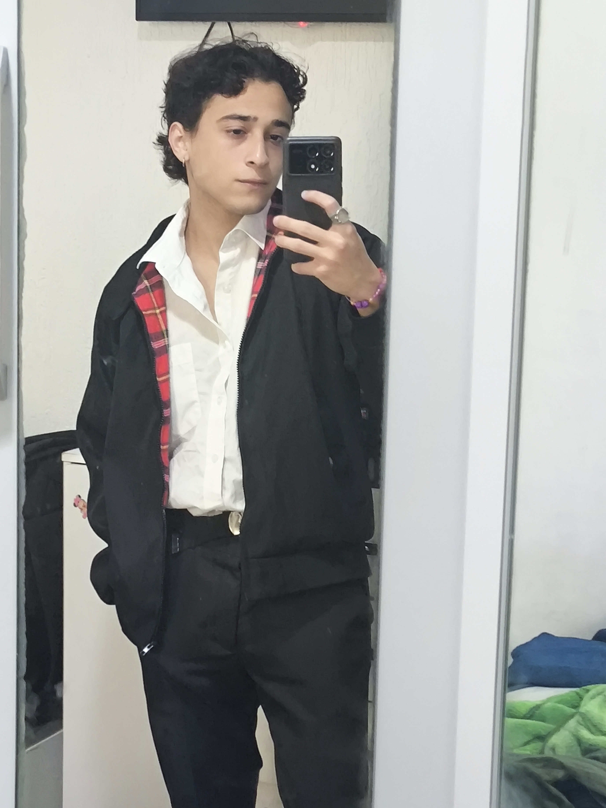

Olá! Meu nome é Cauã Gabriel. Sou estudante da área de tecnologia e estou sempre buscando aprender e desenvolver
novas habilidades. Atualmente, estou estudando HTML, CSS e C#, além de lógica de programação e outros conteúdos
relacionados à tecnologia.
Tenho bastante interesse por programação e banco de dados e gosto de entender como as coisas funcionam, testar
ideias e encontrar soluções para problemas. Também tenho experiência com ferramentas de informática, Excel,
sistemas administrativos e plataformas de e-commerce.
Sou uma pessoa curiosa, criativa e persistente. Quando tenho interesse em algo, gosto de me aprofundar e
continuar tentando até conseguir. Meu objetivo é continuar evoluindo na área de tecnologia, adquirir cada vez
mais experiência e construir uma carreira profissional na área.